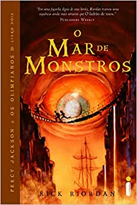
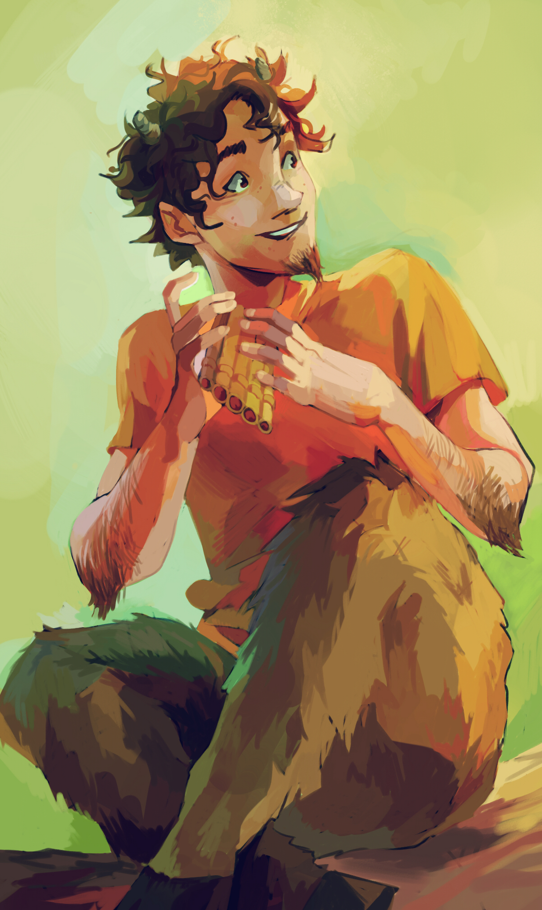

Título: Percy Jackson e o Mar de Monstros.
Ano de Publicação: 01/04/2006.
Editora: Intrínseca.
Número de Páginas: 304.
Sinopse: Nessa nova aventura, Percy e seus amigos estão em busca do Velocino de Ouro, único artefato mágico capaz de proteger da destruição seu lugar predileto e, até então, o mais seguro do mundo: o Acampamento Meio-Sangue. Com o envenenamento da árvore de Thalia por um inimigo misterioso, as fronteiras mágicas que protegem o Acampamento estão ameaçadas, e é preciso buscar o antídoto.Assim, nossos heróis partem em uma arriscada e incrível viagem pelo Mar de Monstros, localizado nas coordenadas 30-31-75-12: uma referência ao Triângulo das Bermudas. Lá, enfrentam seres fantásticos e muitos perigos e situações inusitadas, que põem à prova seu heroísmo e sua herança – quando Percy irá questionar se ser filho de Poseidon é uma honra ou uma terrível maldição.
Ano de Publicação: 01/04/2006.
Editora: Intrínseca.
Número de Páginas: 304.
Sinopse: Nessa nova aventura, Percy e seus amigos estão em busca do Velocino de Ouro, único artefato mágico capaz de proteger da destruição seu lugar predileto e, até então, o mais seguro do mundo: o Acampamento Meio-Sangue. Com o envenenamento da árvore de Thalia por um inimigo misterioso, as fronteiras mágicas que protegem o Acampamento estão ameaçadas, e é preciso buscar o antídoto.Assim, nossos heróis partem em uma arriscada e incrível viagem pelo Mar de Monstros, localizado nas coordenadas 30-31-75-12: uma referência ao Triângulo das Bermudas. Lá, enfrentam seres fantásticos e muitos perigos e situações inusitadas, que põem à prova seu heroísmo e sua herança – quando Percy irá questionar se ser filho de Poseidon é uma honra ou uma terrível maldição.
Personagens Principais

Percy Jackson

Annabeth Chase

Groover Underwood

Tyson

Clarisse La Rue